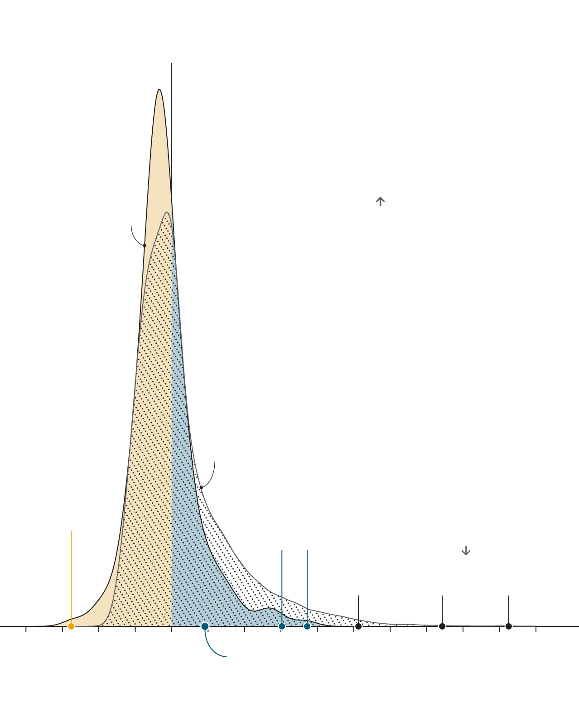

Star football managers don’t improve teams as much as star players do
Distribution of managers and players* from “big five” leagues†, 2004-18
→ Makes average team better
Makes average team worse ←
Our model estimates the influence of managers and players, after adjusting for the quality of the rest of their teams
Managers
Higher share of managers/players
Players
Carlo Ancelotti
Both managers won league titles with underdog teams
Has under-
performed, given
his star-studded
clubs
Star players’ impact can reach ten points per season. Managers rarely add more than two
Diego
Simeone
Jürgen
Klopp
Lionel Messi,
Cristiano Ronaldo
Harry Kane
Neymar
-4
-2
0
+2
+4
+6
+8
+10
Expected
league points
per season gained/lost
José Mourinho
*Each team’s best 13 players
†England, France, Germany, Italy and Spain